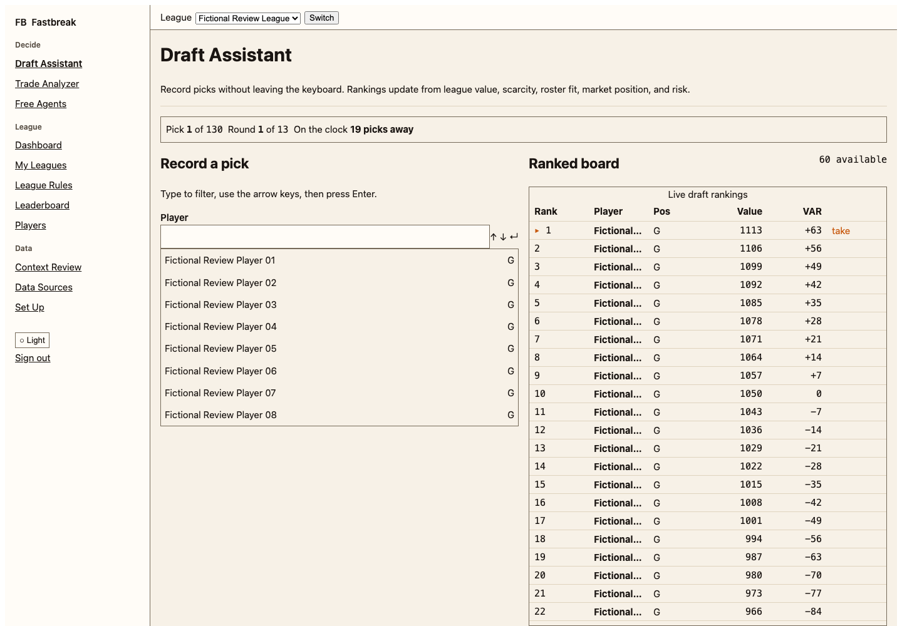
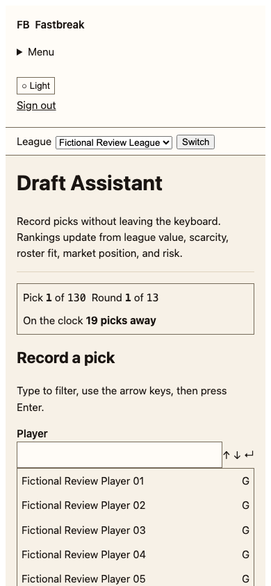
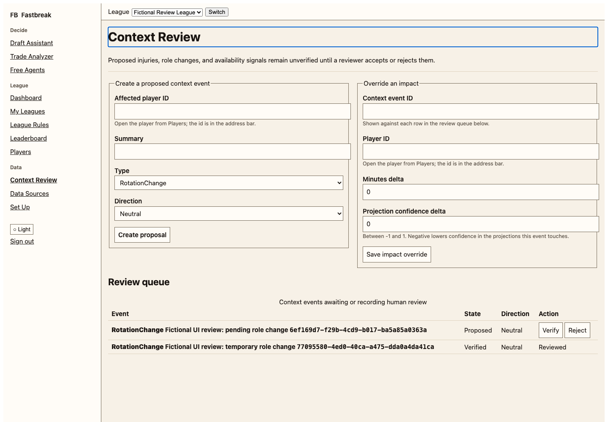
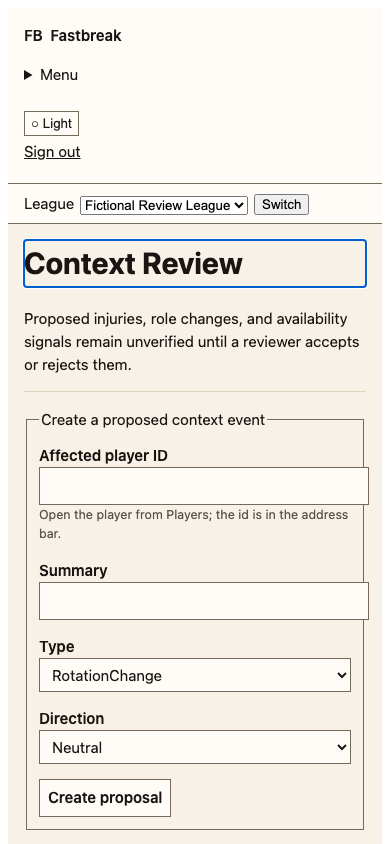
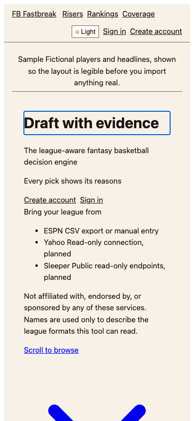
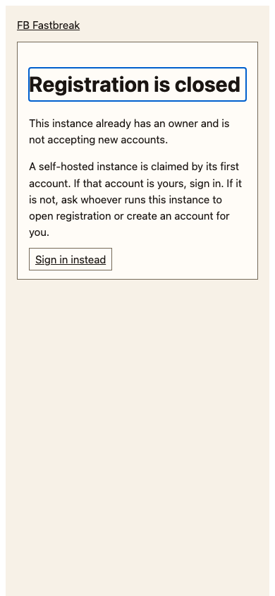

Fastbreak · owner review · 18 September 2026
Arena Glass.
Your visual review.
A basketball editorial entrance, restrained glass controls, and a clear draft workspace. This is the proposed visual direction for a React migration. Production still uses Blazor.
Open interactive prototype →Review Landing, Sign in, Draft, and Player detail. Use Light / Dark and Solid mode. All data is fictional. The photographs and proposed-design captures are local mood references; they are not cleared release assets.
Proposed screens
Click a capture for full size. The desktop and phone versions show the same design at different widths. Try the interactive version before judging focus, navigation, or selection behavior.


Landing · light


Sign in · dark


Sign in · light


Draft · dark


Draft · light


Player detail · dark


Player detail · light


Existing Blazor UI
Captured with Playwright against a disposable database of fictional players. These establish the current experience; they are not screenshots of React.


Current desktop draft

Current phone draft

Current Context Review

Current phone Context Review

Current landing, registration closed

Current closed registrationWhat to decide
Is this the right Apple / basketball balance? Should glass be more visible? Keep system typography or use stronger sports headlines? Confirm imagery permissions or replacements, existing-capability scope, and JavaScript-dependent final public/auth rendering before implementation.
Playwright results and known current-app issues are in the audit notes. The full repository gate is blocked by an existing vulnerable dependency; the production migration has not started.
Try the draft preview →